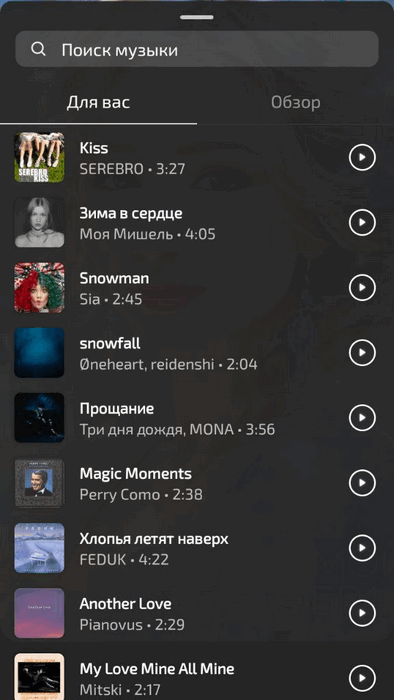
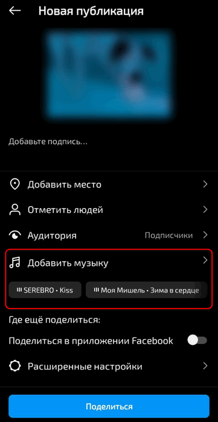
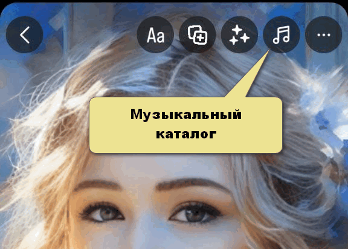
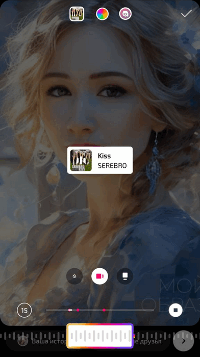
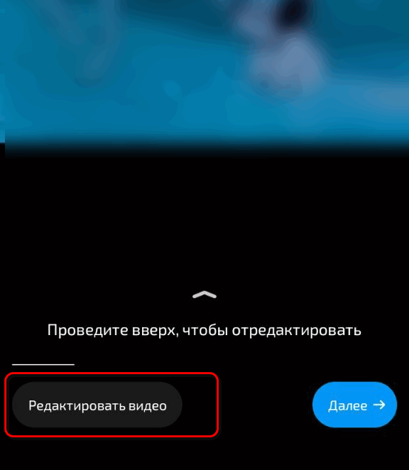
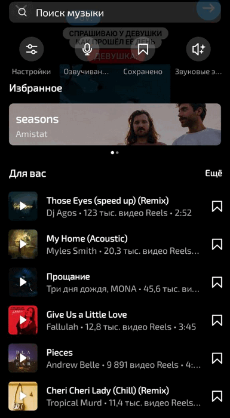
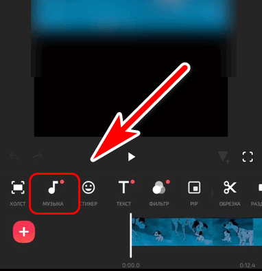
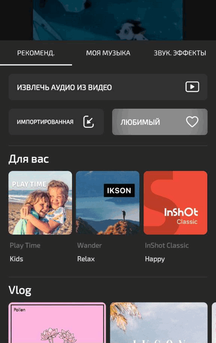
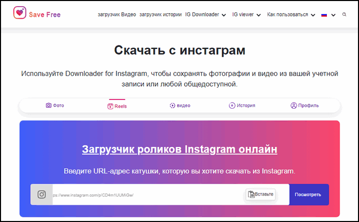

Как добавить свою музыку в Инстаграм

Добавить музыку в Историю Инстаграма* можно через каталог, записать на микрофон или прикрепить с помощью дополнительных приложений. У социальной сети есть разрешение на использование треков популярных музыкантов и редактор, для записи уникальных звуков от пользователей.
Музыкальный каталог Инстаграма*
В социальной сети можно добавлять музыку в Сторис, публикациях и при редактировании видео. У автора контента появится выбор: «Добавить музыку из каталога», где треки разбиты по популярности и частоте их использования. Отдельно выделена категория: «Мои избранные»: те, которые владелец страницы добавлял в Сохраненное.

Основные разделы в музыке:- для Вас. Категория, которая составлена по предыдущим запросам пользователя, на основании его сохраненных композиций;
- обзор. Общий раздел с музыкой, где есть популярные треки, подбор по жанрам, темам, настроению.
Отдельно вынесен раздел с Избранным (Сохраненным): туда добавлена вся музыка и оригинальные дорожки, которые пользователь пометил как «интересные». И этот раздел также разделен на: «Оригинальное аудио» (звуки, записанные другим авторами, отредактированные треки) и «Музыка» (популярные треки от всемирно известных исполнителей).
Авторское право: изменения
Добавляя в Сторис Инстаграма* музыку, теперь не нужно задумываться о блокировке за авторское право. То есть, практически все популярные композиции уже есть в каталоге социальной сети и их можно добавлять на фото, видео. Но все еще остаются ограничения:
- использовать сниппеты или слитые в сеть, еще не вышедшие треки, - запрещено авторским правом;
- использовать чужие «минусовки» и записывать песни, подписывая своим именем – нельзя. Но это не касается переводов, где указано оригинальное название трека.
Чтобы попасть в каталог Инстаграма* как исполнитель, нужно: либо записать трек с помощью микрофона, стороннего редактора, либо разместить свою музыку на других площадках. Преимущественно, конечно, Spotify или Deezer, куда загружают композиции всемирно известные композиторы.
Добавить музыку к фотографии
Добавить песню в Инстаграм* к фотографии стало возможным в последних обновлениях. Функция работает на мобильных устройствах и появляется при размещении публикации. Добавить трек:
- Зайти в Инстаграм* - нажать по кнопке: «Создать».

- Публикацию – выбрать одиночное фото или сделать «карусель»,
- В меню добавления описания появится: «Добавить музыку».
- Выбрать трек из каталога, рекомендованных песен или отыскать с помощью поиска.
- Выбрать отрезок, который будет проигрываться.
- Опубликовать.
Автор выбирает часть песни, которая будет проиграна при нажатии на запись или пролистывании, если у посетителей страницы включено автоматическое проигрывание. Сверху публикации будет указана композиция и нажав по ней, подписчики и посетители страницы могут посмотреть другие посты с таким же треком. При добавлении песни к посту нет варианта записи своего звука или оригинальной дорожки, ранее сохраненной автором записи.
Загрузить видео со своей музыкой
Наложить видео на музыку в Инстаграм* можно несколькими способами: через встроенный редактор социальной сети, дополнительное программное обеспечение или записать собственный звук. Как добавлять аудио:
- Зайти в раздел «Создать» - Публикация.
- Указать видео на своем смартфоне – сверху нажать по значку «ноты».

- Выбрать аудиозапись – указать фрагмент, который будет воспроизводиться.

- Опубликовать.
В Инстаграме* есть ограничение по максимальному времени видеоклипа, на котором можно поменять музыкальное сопровождение – не более 90 секунд.
Если клип идет дольше, то его можно озвучить: в этом же меню редактирования записи есть одноименный пункт. Автор записывает свой голос, выбирает звуковые эффекты и может прослушать результат перед размещением, при необходимости – вернуться и отменить изменения. Из эффектов голоса можно подобрать: повышенные тона, ускорение, замедление аудио. А из дополнительных – звуки природы, свист, злой смех, аплодисменты и другие. При редактировании дорожки указать, где именно они должны размещаться и будут ли наложены друг на друга.
Функции редактора Reels
Добавить трек в Инстаграм* через Рилс – простая и популярная идея. Раздел собирает зрителей, помогает авторам искать и находить полезные материалы для своего контента, вдохновляться. И через него можно выложить видео в Инстаграм* с музыкой, выбрав чужой оригинальный звук, создав свой или подобрав популярную песню. С помощью редактора звука в Reels можно:
- изменить тональность: сделать высокой, понизить, сделать смешной;
- добавить свою музыку через озвучку;
- выбрать песню из каталога;
- отредактировать отрезок: выбрать отдельный фрагмент музыкальной композиции, который будет воспроизводиться в Рилс, например в замедленном виде;
- отрегулировать громкость: убавить звук из оригинального аудио и увеличить в добавленной мелодии или наоборот.
Перейти к редактированию звука в Reels:
- Зайти в Инстаграм* - нажать по кнопке: «Создать».
- Выбрать видеоклип на смартфоне или снять с помощью встроенной камеры.

- Перейти к редактированию – нажать сверху по значку в виде «ноты».

- Выбрать мелодию из каталога – указать фрагмент, который будет воспроизводиться.
- Нажать по дорожке с видео – появится три новые функции: «Озвучить», «Изменить громкость» и «Добавить музыку».
С помощью редактора можно добавить одну песню и нажав по ней – появится дополнительные функции как «Настроить», «Заменить» или «Удалить». Где первая – это настройки продолжительности и выбор отрезка для воспроизведения в клипе. Остальные соответствуют своим названиям: автор может заменить текущий трек другим, подобрать более интересную песню.
Чтобы создавать красивые видео, узнай как улучшить их качество при публикации в нашей статье
Добавить аудио через Inshot
Выложить видео в Инстаграм* с музыкой возможно и через дополнительные приложения. Например, inShot с добавлением музыки, созданием слайд-шоу и редактированием изображений, фрагментов видео. В приложении есть встроенный каталог аудио, без авторского права и возможность загрузки музыки из личного архива пользователя. Как добавить композицию из личного хранилища:
- Скачать и установить приложение.
- Открыть – Новый проект.

- Выбрать видео у себя на телефоне – нажать по инструменту «Музыка».

- Моя – указать запись на смартфоне.
- Выбрать продолжительность, отрегулировать громкость.
ИнШот предлагает регулярно обновляемый каталог музыки без вокального сопровождения и короткие треки, где есть вокалист. Отдельный подраздел – звуковые эффекты, которые можно наложить на аудио и сделать интересные переходы. Другие полезные сервисы для пользователей и блогеров вы можете посмотреть на нашей отдельной странице.
Загрузить музыку в Сторис
Для создания креативных Историй у пользователя есть множество вариантов: записать трек на заднем плане, добавить из музыкального каталога, сделать видео в отдельном приложении. Вставить музыку в Сторис проще всего, даже если такой мелодии нет в коллекции социальной сети. Записать трек на заднем плане:
- Зайти в Инстаграм* - Создать.
- История – включить музыку на колонке или другом устройстве.
- Запустить запись видео – сохранить мини-клип.
Такой вариант создания музыкальных Историй чаще используют для записи в машине, где есть качественная акустическая система. Добавляя песню в Историю таким способом нужно помнить, что качестве звука все равно будет хуже, чем если добавлять из внутреннего каталога.
ТОП-10 треков для создания Рилсов и Историй в 2024
- 🎶 The Drums – Money
- 🎶 Auatinmillz – Careless Whisper
- 🎶 Perry Como – Magic Moments
- 🎶 Mattend – Te Molla
- 🎶 Nikos Band – Georgian Disco
- 🎶 Tommasoreplica – Set fire to the Rain&Another Love
- 🎶 Татьяна Куртукова – Матушка
- 🎶 Ne-Yo – Closer
- 🎶 INNA – Amazing
- 🎶 Alessia Cara – Here
- 🎶 Noisy Radio – Chipi Chipi Chapa
Видео скачивается без звука: что делать
На Айфоне и на Андроиде сохранить музыку при скачивании Reels или Истории не всегда получается. Это происходит из-за авторских прав: исполнители запрещают загружать треки отдельно, чтобы блогеры и их фанаты не могли присвоить себе авторство или его часть. Такое случается и с видео, где аудио-дорожка была записана создателем клипа. Но есть другие варианты, как получить видео из Инстаграма* без потери звука:
- чат-боты;
- сайты по скачиванию клипов из Инстаграма*.
Второй вариант лучше тем, что не нужно скачивать и устанавливать дополнительное программное обеспечение на смартфон. Скачать клип с музыкой:
- Перейти на сайт Save Free – скопировать ссылку на нужный клип из Инстаграма*.

- Вставить в поисковой строке на сайте – нажать: «Скачать».
- Подождать, пока прогрузится клип – получить на смартфон.
Но такой способ не сработает на закрытых аккаунтах или если установлены параметры конфиденциальности.
Узнай о других способах, как скачать видео и фото из Инстаграма* в нашей обзорной статье.